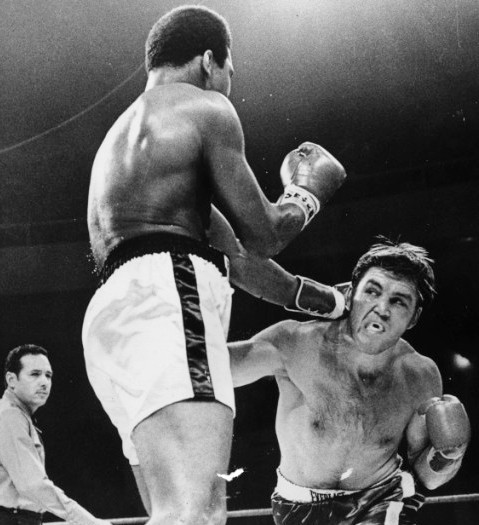
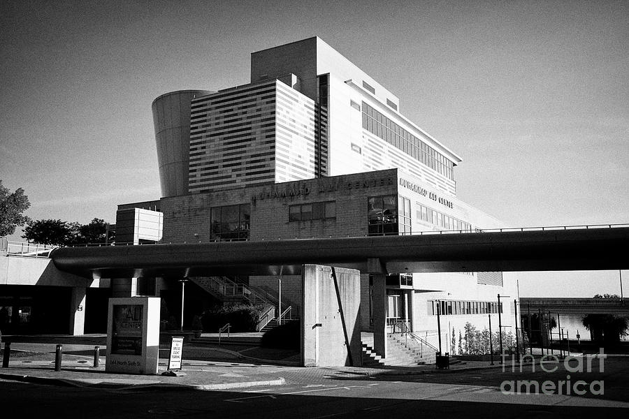
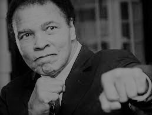

Muhammad Ali: The Legend Who Shook the World
In the annals of history, there are few figures who manage to transcend their domains and become global icons. Muhammad Ali, born Cassius Marcellus Clay Jr. on January 17, 1942, in Louisville, Kentucky, was one such individual. His remarkable journey from a young boy with dreams to the world's greatest boxer and an enduring symbol of courage and conviction is a narrative that continues to inspire and captivate.
A Star is Born: The Boxing Prodigy
From the early days of his life, Ali exhibited an extraordinary passion and talent for boxing. His meteoric rise through the amateur ranks was a testament to his dedication and unmatched work ethic. Under the guidance of trainer Angelo Dundee, Ali's dazzling footwork and lightning-fast jabs became his trademark. He captured the world's attention by winning a gold medal in the 1960 Olympics, setting the stage for his entrance into professional boxing.
Rumble in the Jungle: The Thrilling Battles
 The "Rumble in the Jungle," a defining moment in both sports and cultural history, was the epochal
clash between two boxing titans, Muhammad Ali and George Foreman, on October 30, 1974, in Kinshasa,
Zaire (now the Democratic Republic of Congo). The fight not only pitted the reigning heavyweight
champion Foreman against the charismatic and determined Ali but also symbolized a battle of
contrasting styles, ideologies, and strategies. Ali, the master of psychological warfare,
entered the bout as the underdog, employing his infamous "rope-a-dope" tactic that saw
him absorb Foreman's powerful punches while lying against the ropes, strategically
conserving his energy. This calculated approach defied conventional wisdom and
showcased Ali's uncanny ability to read his opponent, waiting for the perfect
moment to strike back. As the rounds progressed, the intense African heat and
the mounting pressure weighed heavily on both fighters, testing their physical
and mental stamina. In the eighth round, Ali seized his opportunity, unleashing
a rapid flurry of punches that sent Foreman to the canvas, securing an improbable
victory and regaining the heavyweight title. Beyond its boxing significance, the
"Rumble in the Jungle" echoed as a metaphorical triumph of resilience over brute
force, a tale of strategic brilliance outshining raw power. This iconic clash
remains etched in history as a testament to Ali's unparalleled fighting spirit,
his innovative tactics, and his ability to inspire the world with his indomitable will.
The "Rumble in the Jungle," a defining moment in both sports and cultural history, was the epochal
clash between two boxing titans, Muhammad Ali and George Foreman, on October 30, 1974, in Kinshasa,
Zaire (now the Democratic Republic of Congo). The fight not only pitted the reigning heavyweight
champion Foreman against the charismatic and determined Ali but also symbolized a battle of
contrasting styles, ideologies, and strategies. Ali, the master of psychological warfare,
entered the bout as the underdog, employing his infamous "rope-a-dope" tactic that saw
him absorb Foreman's powerful punches while lying against the ropes, strategically
conserving his energy. This calculated approach defied conventional wisdom and
showcased Ali's uncanny ability to read his opponent, waiting for the perfect
moment to strike back. As the rounds progressed, the intense African heat and
the mounting pressure weighed heavily on both fighters, testing their physical
and mental stamina. In the eighth round, Ali seized his opportunity, unleashing
a rapid flurry of punches that sent Foreman to the canvas, securing an improbable
victory and regaining the heavyweight title. Beyond its boxing significance, the
"Rumble in the Jungle" echoed as a metaphorical triumph of resilience over brute
force, a tale of strategic brilliance outshining raw power. This iconic clash
remains etched in history as a testament to Ali's unparalleled fighting spirit,
his innovative tactics, and his ability to inspire the world with his indomitable will.
More Than a Boxer: A Voice for Justice
Ali's impact extended beyond the boxing ring. In the tumultuous 1960s, as the Civil Rights Movement gained momentum, he fearlessly used his platform to address issues of racial inequality. His conversion to Islam and subsequent name change reflected his commitment to his beliefs. He famously declared, "I am America. I am the part you won't recognize. But get used to me. Black, confident, cocky; my name, not yours; my religion, not yours; my goals, my own; get used to me."
The Courage of Conviction: Refusing to Conform
Ali's most defining moment arrived when he refused to be drafted into the Vietnam War, citing religious and moral reasons. His stance led to his boxing titles being stripped and his exile from the sport. This sacrifice, however, only bolstered his reputation as a champion of justice and individual rights. His fight against the U.S. government was a battle that resonated far beyond the ring, challenging societal norms and galvanizing a generation.
The Comeback Kid: Redemption and Triumph
After three years of legal battles, Ali returned to the ring, proving that his spirit was unbroken. He went on to regain his heavyweight titles in a thrilling showdown with George Foreman, reaffirming his place as the king of boxing. His tenacity and resilience became a source of inspiration for countless individuals facing their own adversities.
Beyond Borders: A Global Icon
 Muhammad Ali's triumphant return to boxing after a three-year hiatus remains a testament to his unyielding spirit and resilience. Stripped of his titles and banned from the ring due to his principled refusal to be drafted into the Vietnam War, Ali faced not only legal battles but also personal challenges. Yet, in 1970, the Supreme Court overturned his conviction, paving the way for his comeback. His return bout against Jerry Quarry in 1970 was a moment of exhilaration, showcasing Ali's exceptional skill and his ability to reclaim his place in the sport. This pivotal chapter in his life marked not only a boxing renaissance but also demonstrated his ability to overcome adversity with unwavering determination, inspiring a world that had eagerly awaited his return.
Legacy of Inspiration: The Muhammad Ali Center
 The Muhammad Ali Center stands as a powerful tribute to the enduring legacy of the legendary boxer and global icon, Muhammad Ali. Located in Louisville, Kentucky, the center is more than just a museum; it's a living embodiment of Ali's core values of respect, confidence, giving, and spirituality. Through captivating exhibits, interactive displays, and educational programs, the center inspires visitors to embrace Ali's messages of social justice, equality, and humanitarianism. It serves as a place of learning, reflection, and empowerment, inviting individuals from all walks of life to be inspired by Ali's remarkable life story and his unwavering commitment to making the world a better place.
The Eternal Champion
 Muhammad Ali's passing on June 3, 2016, marked the end of an era, but his legacy continues to thrive. He remains an enduring symbol of courage, determination, and social activism. His life story serves as a reminder that one person can truly make a difference, that the impact of standing up for one's beliefs can reverberate through generations. Muhammad Ali's name is etched not only in the annals of sports history but in the hearts of people around the world who continue to draw strength from his remarkable journey. As we remember the man who floated like a butterfly and stung like a bee, we are reminded that greatness is not just about victories in the ring but about the impact we leave on the world.